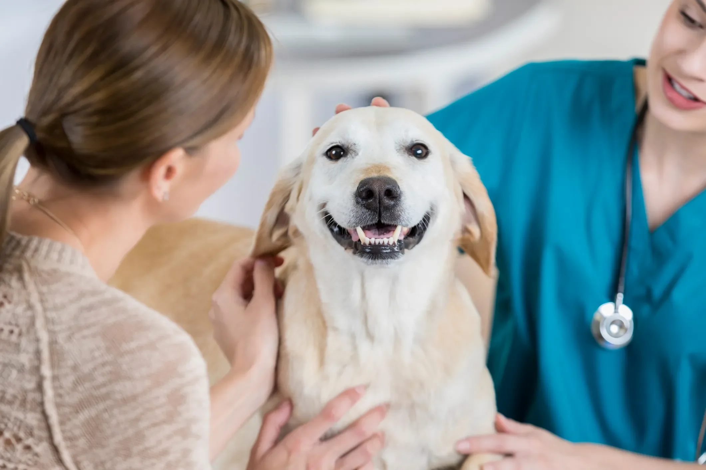

Cães ajudam a regular o estresse e melhoram qualidade de vida, diz estudo
Novo estudo da Universidade de Denver mostrou que cães equilibram a resposta biológica ao estresse.
A relação entre humanos e cães vem sendo estudada há décadas, mas novas evidências científicas indicam que os efeitos vão muito além do conforto emocional.
Pesquisadores do Instituto de Conexão Humano-Animal da Universidade de Denver descobriram que a presença de cães — durante situações de pressão — ativa simultaneamente dois eixos biológicos reguladores do estresse.
Segundo uma reportagem do Popular Science, o estudo submeteu os adultos participantes a um teste clássico de estresse, com apenas uma parte estando acompanhada de seus cães. Durante a pesquisa, os cientistas analisaram dois indicadores: o cortisol, relacionado ao eixo HPA (hipotálamo-pituitária-adrenal), e a enzima alfa-amilase, associada ao eixo SAM (simpatoadrenal medular).
Os resultados apontaram que os donos de cães apresentaram resposta moderada de cortisol e ativação saudável de alfa-amilase, uma combinação considerada ideal para lidar com desafios momentâneos sem gerar sobrecarga ao organismo.
Em contrapartida, quem passou pela experiência sem o animal teve uma resposta hormonal desequilibrada: o cortisol subiu mais e a enzima alfa-amilase ficou praticamente inativa — um padrão associado a estresse crônico ou desregulação do sistema nervoso.